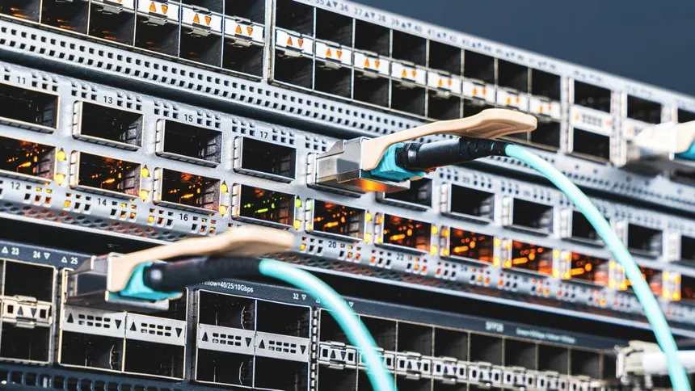
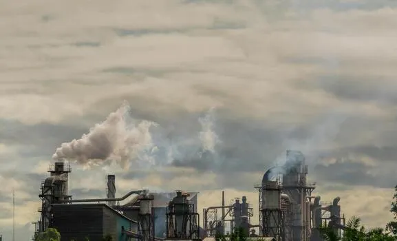

O que é um Data Center para IA?
Imagine um prédio gigante repleto de computadores superpotentes. Isso é um Data Center. Quando você pede para uma IA criar um texto ou imagem, esses computadores trabalham intensamente, gerando calor extremo e exigindo recursos naturais constantes para não "derreterem".

Sede Digital: O Consumo de Água
Para resfriar os milhares de servidores, muitos Data Centers usam sistemas de evaporação de água. Estima-se que, para cada 20 a 50 perguntas que você faz a uma IA generativa, 500ml de água são "bebidos" pelo sistema para resfriamento.
O resfriamento dos componentes em um Data Center é essencial para suprir a sua necessidade de funcionamento contínuo, e é o processo responsável por um volumoso gasto de água.
Existem os sistemas aberto e fechado de resfriamento.
O sistema aberto contém dutos e ar-condicionado, gastando água para resfriar esse ar utilizado.
Já o sistema fechado utiliza líquidos refrigerantes, e este pode reduzir a quantidade de água utilizada em até 70%.
Fato: Sistemas fechados podem reduzir esse gasto em até 70%, mas nem todos os centros utilizam essa tecnologia ainda.
O Consumo de Energia
Além da água, um Data Center também consome muito mais energia elétrica do que muitos podem imaginar.

A energia elétrica é essencial para os Data Centers não só para manter o funcionamento do local, pois contém uma grande quantidade de componentes elétricos, mas também para o resfriamento, o qual utiliza cerca de 40% da eletricidade total. Modelos mais avançados de Inteligência Artificial também utilizam mais energia, por terem uma capacidade de processamento mais robusta.
Projeta-se que de 6 a 12% de toda a demanda de eletricidade dos EUA até 2028 será destinada à alimentação de Data Centers.
A emissão de carbono
O uso ininterrupto de eletricidade mencionado no tópico anterior tem implicações escondidas, relacionadas ao consumo de carbono.

A intensa demanda energética mencionada anteriormente está tornando necessário que mais eletricidade esteja disponível para uso dos Data Centers.
Por isso, empresas de energia estão reativando usinas de carvão mineral, uma alternativa mais barata do que outras fontes limpas, como o gás natural.
A queima do carvão a fim de gerar eletricidade, sendo um combustível fóssil, libera uma quantidade enorme de gases de efeito estufa, principalmente o dióxido de carbono (CO2).
NOTA: O efeito estufa toma esse nome porque tais gases "envolvem" a Terra, e dificultam a saída do calor de dentro do planeta, aumentando a temperatura, como uma estufa.